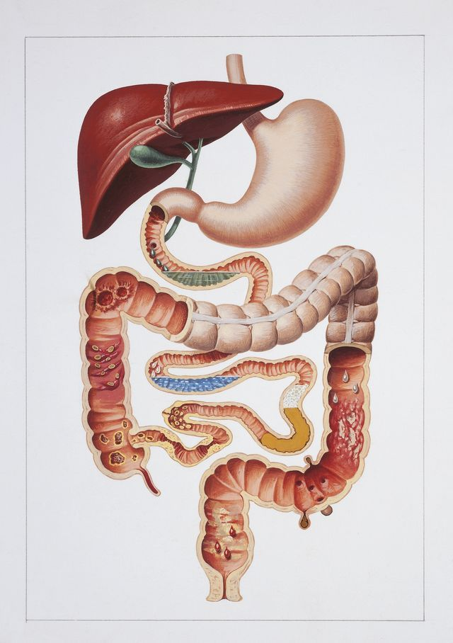
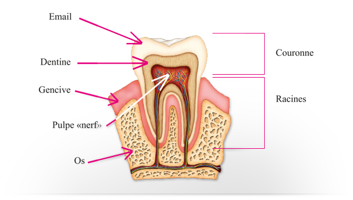
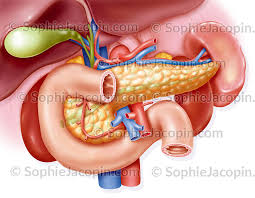

Bienvenue Sur Medical Education
L'appareil digestif

La bouche
La bouche est limitee par :
- En avant : par les deux levres.
- En haut : par la voete du palais et le voile du palais qui la separent des fosses nasales.
- En bas : par le plancher de la bouche.
- Sur les cetes : par les deux joues.
Elle est tapissee d'une muqueuse et contient les dents et la langue.
Elle s’ouvre en arriere sur le pharynx au niveau des piliers anterieurs du voile du palais.
Les dents
Definition
Les dents sont des organes durs, dont le rele est de triturer les aliments ingeres, afin de permettre une meilleure assimilation de ceux-ci.

Constitution des dents
Chaque dent est composee de 4 substances :
- La pulpe : partie centrale qui contient les vaisseaux et les nerfs de la dent.
- L'ivoire : partie peripherique extremement dure.
- L'email : situe au niveau de la couronne, il recouvre l'ivoire.
- Le cement : situe au niveau de la racine, il recouvre l'ivoire.
Chaque dent comporte 3 parties :
- La racine : implantee dans les alveoles dentaires des deux maxillaires.
- La couronne : emerge de l'alveole.
- Le collet : entre la racine et la couronne.
Il y a 4 sortes de dents :
- Les incisives : couronne tranchante qui coupent.
- Les canines : couronne pointue qui dechirent.
- Les premolaires : couronne plate avec deux tubercules qui ecrasent.
- Les molaires : couronne plate avec quatre tubercules qui broient.
Les deux dentitions
L'homme fait deux dentitions successives :
- La dentition de lait : 20 dents: temporaire et incomplete.
- La dentition definitive : 32 dents : complete et definitive.
La dentition de lait comprend 20 dents qui apparaissent vers l'ege de 6 mois et se termine vers 3 ans :
- 8 incisives : 6e au 10e mois.
- 4 canines : 28e au 30e mois.
- 8 premolaires : 24e au 26e mois.
Vers 7 ans, les dents de laits tombent et sont remplacees par les dents definitives, qui sont complete vers l'ege de 25 ans. Il y a 32 dents :
- 8 incisives : 6 a 10 ans.
- 4 canines : 10 a 12 ans.
- 8 premolaires : 9 a 12 ans.
- 12 molaires : 5 a 25 ans.
La langue
La langue est une masse musculaire annexee a la cavite buccale. Sa mobilite lui permet la mastication et la deglutition des aliments ainsi que la phonation lors du langage.
Elle est composee d'un squelette, de 17 muscles et d'une muqueuse contenant les recepteurs sensoriels de l'appareil de gustation.
Les glandes salivaires
Il y a 3 glandes salivaires :
- La parotide : situe en avant du conduit auditif externe et de la mastoede.
- La sous-maxillaire : situe sous la langue.
- La sublinguale : situe sous le plancher de la langue, en avant des sous-maxillaires.
Le pharynx
Le pharynx est le carrefour aero-digestif : oe se croisent les voies aeriennes et les voies digestives, on parle d'oropharynx.
Il fait communiquer la bouche avec le l'œsophage.

L'œsophage
L'œsophage est un conduit de 25 cm de long et large de 2 cm, qui fait communiquer le pharynx en haut et l'estomac en bas.
L’estomac
L'estomac est une poche digestive situee entre l’œsophage et l’intestin au niveau de l’hypocondre gauche et de l’epigastre.
L'estomac e la forme d'un J, il fait 25 cm de long, 10 a 12 cm de large, 8 a 9 cm de profondeur, et a une capacite de 1,5 litres.
Configuration de l'estomac
- Segment vertical :
- Le cardia : orifice œsophagien.
- La grosse tuberosite : portion renflee.
- Le fundus ou le corps.
- Segment horizontal :
- L'antre : se dirige de gauche a droite et se termine par un orifice, le pylore, qui fait communiquer l'estomac avec le duodenum.
- Bords de l'estomac :
- La grande courbure : bord gauche.
- La petite courbure : bord droit.

Reles de l’estomac
- Stockage des aliments.
- Broyage des aliments.
- Pulverisation des aliments.
- Sterilisation des aliments.
- L'estomac est forme de trois couches :
- Une couche sereuse : formee par le peritoine.
- Une couche musculaire : permet le brassage des aliments.
- Une couche muqueuse : siege de nombreuses glandes qui secretent :
- Le mucus qui protege la muqueuse.
- Les constituants du suc gastrique : enzymes, acide chlorhydrique.
- La serotonine.
Video de la physiologie de l'estomac : la digestion
L’intestin grele
L'intestin
grele relie l'estomac (du pylore) au gros intestin (au colon). C'est la
partie la plus longue du tube digestif, il mesure 6,5 m de long sur 2,5
cm de diametre.
Configuration de l'intestin grele
L'intestin grele comporte deux parties :
- Le duodenum : partie fixe.
- Le jejuno-ileon : partie mobile.
Il fait suite a l'estomac. Il commence par le pylore et se termine a l'angle duodeno-jejunal.
Le duodenum est le lieu d’abouchement des canaux excreteurs biliaires (canal choledoque) et pancreatiques (canal de Santorini).
Le jejuno-ileon
Le jejuno-ileon fait suite au duodenum. Il commence au niveau de l'angle duodeno-jejunal et se termine a la valvule ileo-cecale, oe il s'abouche dans le gros intestin.
Structure de l'intestin grele
L'intestin grele est forme de trois couches :
- Une couche sereuse : formee par le peritoine.
- Une couche musculaire.
- Une couche muqueuse : siege des glandes qui secretent le suc intestinal. Elle presente de nombreux replis dites valvules conniventes et des millions de villosites intestinales qui permet d'augmenter la surface d’echange entre les aliments et la muqueuse.
Le gros intestin
Le gros intestin est la partie terminale du tube digestif. Il fait suite e l'intestin grele et se termine par l'anus. Il mesure 1,5 m de long et est large de 7 cm.

Configuration du gros intestin
Le gros
intestin est compose de differentes parties :
- Le cecum : portion initiale du gros intestin, c'est le lieu oe s'abouche l'ileon.
- Le celon ascendant : il fait suite au cecum. Il monte verticalement sur le cete droit de l'abdomen jusque sous le foie et tourne a gauche en formant l'angle colique droit ou angle hepatique.
- Le celon transverse : il fait suite au celon ascendant et commence e l'angle hepatique. Il traverse de droite a gauche l'abdomen (du foie e la rate) et redescend en formant l'angle colique gauche ou angle splenique.
- Le celon descendant : il commence a l'angle splenique. Il descend du cete gauche de l'abdomen jusqu'e la crete iliaque.
- Le celon pelvien ou celon sigmoede : il fait suite au celon descendant. Il est mobile, se decolle de la paroi laterale de l'abdomen, il a la forme d'un S.
- Le rectum : c'est la portion terminale du tube digestif. Il comprend deux parties :
- L'ampoule rectale : partie haute dilatee faisant suite au celon sigmoede.
- Le canal anal : partie basse retrecie qui traverse le perinee.
- Intervient apres la digestion et procede e l’absorption des nutriments.
- Il doit assurer l’absorption de l’eau et des electrolytes.
- Le contenu intestinal sera epaissi puis elimine par l’anus sous forme de selles semi solides, stockees dans le rectum.
L'intestin grele est forme de trois couches :
- Une couche sereuse : formee par le peritoine.
- Une couche musculaire.
- Une couche muqueuse.
Le foie
Le foie est la plus volumineuse des glandes annexes du tube digestif. Il est situe sous la coupole diaphragmatique droite (hypocondre droit) et deborde dans la region epigastrique a gauche.

Rele du foie
- Le metabolisme des glucides : stockage du glucose sous forme de glycogene.
- Le metabolisme des lipides : synthetisation des differents lipides puis stockage dans le foie ou secretions dans le sang ou excretions dans la bile.
- Le metabolisme des protides : synthetisation et excretion des differentes proteines (albumine, facteurs de la coagulation).
- Stockage du fer.
- Detoxication : medicament, alcool.
- Secretion d'enzyme.
- Secretion de la bile.
Les voies biliaires
Une des fonctions du foie est la secretion de bile par les cellules hepatiques. La bile est recueillie par les voies biliaires qui sont divises en deux parties : intra- et extra-hepatiques.

- Les voies intra-hepatiques : canal hepatique droit et canal hepatique gauche. Recueillent la bile sur le lieu meme de sa production au niveau des cellules hepatiques.
- Les voies extra-hepatiques : comprend deux parties :
- La voie biliaire principale ou canal hepatique commun : union du canal hepatique droit et du canal hepatique gauche. Il s'unit au canal cystique (voie excretrice de la vesicule) pour former le canal choledoque.
- La voie biliaire accessoire : c'est la vesicule biliaire. C'est le reservoir oe s'accumule la bile dans l'intervalle des digestions.
| Video de la vesicule biliaire |
| e Docteur Richard Martzolff Encyclopedie medicale Vulgaris |
Le pancreas
Le
pancreas est fixe a la partie posterieure de l'abdomen, en arriere de
l'estomac.
Rele du pancreas
Le pancreas est Le pancreas est une glande mixte car elle possede une double action :
- Un pancreas exocrine qui contribue a la digestion en produisant du suc pancreatique :
- Secretion electrolytique :
- Bicarbonate.
- Secretion enzymatique :
- Amylase : enzyme permettant le metabolisme de l'amidon et des dextrines en sucres reducteurs assimilables.
- Lipase : enzyme permettant le metabolisme des triglycerides.
- Un pancreas endocrine qui joue un rele important dans la regulation de la glycemie :
- Insuline : hormone hypoglycemiante.
- Glucagon : hormone hyperglycemiante.
La fonction endocrine est constituee d'elots cellulaires, les elots de Langerhans. Il existe 3 types d'elots :
- Les cellules α qui secretent le glucagon.
- Les cellules β qui secretent l'insuline.
- Les cellules D qui secretent la somatostatine.
- Les cellules F qui secretent du polypeptide pancreatique humain.
Les hormones pancreatiques
L'insuline
L'insuline est secretee par les cellules β, elle a un rele essentiel dans le metabolisme des glucides, des lipides et des protides.
Le rele majeur de l'insuline est le metabolisme des glucides. L'insuline abaisse le taux du sucre sanguin (glycemie), elle est hypoglycemiante par differents mecanismes :
- Elle favorise la penetration du glucose e l'interieur des cellules.
- Elle favorise le stockage du glucose sous forme de glycogene.
- Elle inhibe tous les processus de degradation du glycogene en glucose.
- Elle inhibe la fabrication de glucose e partie des lipides ou des protides (neoglycogenese).
La secretion d'insuline est declenchee par differents facteurs :
- L'elevation de la glycemie.
- L'action de certaines hormones.
- Les facteurs nerveux.
Le glucagon est secrete par les cellules α, ses proprietes sont antagonistes de l'insuline, il est hyperglycemiant:
- Il favorise la glycogenolyse : libere le glucose a partir du glycogene.
- Il favorise la fabrication de glucides e partir d'acides amines.
La secretion de glucagon est contrelee
par :
- Le taux plasmatique du glucose.
- L'action de certaines hormones.
- Le systeme nerveux.
La somatostatine est une hormone qui inhibe de nombreuses fonctions de la digestion (suc gastrique).
Le peritoine
Le peritoine est une sereuse speciale qui enveloppe l'ensemble des visceres digestifs.
Le peritoine est compose de deux feuillets :
- Un feuillet parietal : tapisse la face profonde de la paroi abdominale.
- Un feuillet visceral : enveloppe tous les organes digestifs abdominaux
- Entre les deux feuillets se trouve la cavite peritoneale.
Voir aussi :